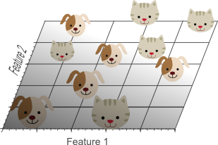

机器学习-KNN
KNN
KNN简介
KNN的原理就是当预测一个新的值x的时候，根据它距离最近的K个点是什么类别来判断x属于哪个类别。
思路是：如果一个样本在特征空间中的k个最邻近的样本中的大多数属于某一个类别，则该样本也划分为这个类别。 KNN算法中，所选择的邻居都是已经正确分类的对象。该方法在定类决策上只依据最邻近的一个或者几个样本的类别来决定待分样本所属的类别。
该算法假定所有的实例对应于N维欧式空间 中的点。通过计算一个点与其他所有点之间的距离，取出与该点最近的K个点，然后统计这K个点里面所属分类比例最大的，则这个点属于该分类。
该算法涉及3个主要因素：实例集、距离或相似的衡量、k的大小。
一个实例的最近邻是根据标准欧氏距离定义的。更精确地讲，把任意的实例x表示为下面的特征向量：
其中 表示实例 的第 个属性值。那么两个实例 和 间的距离定义为 ，其中：
KNN算法的优点：
- KNN是一种非参数学习算法，不需要假设样本数据任何分布。
- KNN具有较高的准确度和可解释性，在许多实际应用中都能有很好的表现。
- KNN算法对于异常值和噪声具有较好的鲁棒性，因为在找最近邻时，邻居是由样本间的距离来判断的，故不易受到噪声和异常值的影响。
- KNN是一种懒惰学习算法，模型构建时间短，训练数据保存在内存中，预测时只需计算新数据与训练样本的距离，因此存储和迭代非常快速。
KNN算法的缺点：
- KNN算法对于大规模的数据集来说，计算复杂度很高，会消耗大量内存和计算时间。
- KNN算法对于高维数据集来说，距离计算效率降低，也容易产生过拟合现象。（维度灾难
- KNN算法对于样本不平衡的数据集来说，易受样本类别比例的影响，导致预测错误率增加。
- KNN算法对于输入数据的特征选择和权重调整较为敏感，选择不合适的特征会导致预测准确度降低。
几种距离度量
特征向量的相似性一般用空间内两个点的距离来度量。距离越大，表示两个越不相似。
作为相似性度量的距离函数一般满足下列性质:
- ,当且仅当
这里，X,Y和Z是对应特征空间中的三个点。
假设 分别是N维特征空间中的一个点，其中 , 表示相应的距离函数，它给出了X和Y之间的距离测度。
距离的选择有很多种，常用的距离函数如下，一般还是用欧氏距离：
- 明考斯基(Minkowsky)距离
λ一般取整数值，不同的λ取值对应于不同的距离
- 曼哈顿(Manhattan)距离
该距离是Minkowsky距离在λ=1时的一个特例
- Cityblock距离
该距离是Manhattan距离的加权修正，其中 是权重因子
- 欧几里德(Euclidean)距离（欧氏距离）
是Minkowsky距离在 时的特例
- Canberra距离
- Mahalanobis距离(马式距离)
给出了特征空间中的点 和 之间的一种距离测度，其中 为某一个模式类别的均值向量， 为相应模式类别的协方差矩阵。
该距离测度考虑了以M为代表的模式类别在特征空间中的总体分布,能够缓解由于属性的线性组合带来的距离失真。易见，到M的马式距离为常数的点组成特征空间中的一个超椭球面。
- 切比雪夫(Chebyshev)距离
切比雪夫距离或是L∞度量是向量空间中的一种度量，二个点之间的距离定义为其各坐标数值差的最大值。在二维空间中。以 和 二点为例，其切比雪夫距离为
- 平均距离
一个注意点：归一化
假设我们有两个样本点，有两个特征值，，如果不做标准化，他们的欧式距离就是 。这样计算的距离就会受第二个特征的影响特别大，因为第一个特征的量级与第二个相比太小了。
既可以用极差法消除量级：
也可以采用标准差标准化：
老师给的是：（其中 是特征向量的第 i 个特征值）
K的选取策略
决策边界
为了理解 K 对模型的影响，要先说说决策边界这个概念。
还记之前讲的 SVM 中的线性分类器吗？ 就是 SVM 中的决策边界。在二分类问题中，决策边界就把空间划为两部分，两边就对应着两类。
KNN 的决策边界一般不是线性的，也就是说 KNN 是一种非线性分类器，如下图。

K 越小越容易过拟合，当 K=1 时，这时只根据单个近邻进行预测，如果离目标点最近的一个点是噪声，就会出错，此时模型复杂度高，稳健性低，决策边界崎岖。
但是如果 K 取的过大，这时与目标点较远的样本点也会对预测起作用，就会导致欠拟合，此时模型变得简单，决策边界变平滑。
如果 K=N 的时候，那么就是取全部的样本点，这样预测新点时，最终结果都是取所有样本点中某分类下最多的点，分类模型就完全失效了。
上图绿线展示的是随着 K 减小，测试误差值（之前介绍过，回归问题中误差值一般用均方误差，分类问题中误差值指的就是错判率）的变化，我们的目标就是找到测试误差最小时对应的 K 值。
选取合适的K
找合适的 K 的过程，也就是 “调参” 的过程，比较经典的方法是 N 折交叉验证。
上图展示的是 5 折交叉验证，也就是将已知样本集等分为 5 份，其中 4 份作为训练集，1 份为验证集，做出 5 个模型。
具体来说：
- 把样本集分成 5 个小的子集，编号为 set1、set2、set3、set4、set5；
- 先用 set1、set2、set3、set4 建模，得到 model1，并在 set5 上计算误差 error1；
- 在用 set1、set2、set3、set5 建模，得到 model2，并在 set4 上计算误差 error2；
- 重复以上步骤，建立 5 个模型，将 5 个误差值相加后除以 5 得到平均误差。
了解完交叉验证是什么，我们就可以从 k=1 开始尝试，计算 K=1 时的平均误差值，每次 K 增加 2，最终能选到产生最小误差值的 K（因为随着 K 变大，误差值会先变小后变大嘛）。
老师给的示意图：
又：K最好取奇数以免出现打平手的情况，但是在多分类问题中无法避免
一个案例：兔子分类
有一种兔子叫作悲伤（Grief），它们的平均身高是 50 厘米，平均体重 5 公斤。我们拿来一百个悲伤，分别测量它们的身高和体重，画在坐标图上，用绿色方块表示。
还有一种兔子呢，叫作痛苦（Agony）。它们体型比较小，平均身高是 30 厘米，平均体重是 4 公斤。我们将一百个痛苦的身高和体重画在同一个坐标图上，用蓝色三角表示。
最后一种兔子叫绝望（Despair）。它们的平均身高45厘米，但体重较轻，平均只有2.5公斤。一百只绝望的数据用黄色圆圈表示。
在这些数据中，(身高,体重) 的二元组叫做特征（features），兔子的品种则是分类标签（class label）。我们想解决的问题是，给定一个未知分类的新样本的所有特征，通过已知数据来判断它的类别。
北京十八环外有一个小树林里经常出现这三种兔子。为了了解它们的生态环境，某研究团队想知道三种兔子的数量比例；可是这些兔子又太过危险，不能让人亲自去做，所以要设计一个全自动的机器人，让它自己去树林里识别它遇到的每一个兔子的种类。啊，为了把故事讲圆，还要假设他们经费不足，所以机器只有测量兔子的身高和体重的能力。
那么现在有一迷之兔子，我们想判断它的类别，要怎么做呢？按照最普通的直觉，应该在已知数据里找出几个和我们想探究的兔子最相似的几个点，然后看看那些兔子都是什么个情况；如果它们当中大多数都属于某一类别，那么迷之兔子大概率也就是那个类别了。
于是乎，我们给机器人预设一个整数 k，让它去寻找距离最近的k个数据样本进行分析。可我们的机器才识别不了那么多，它只测量出这只兔子身长 40 厘米，体重 2.7 公斤，就是下面图中那颗闪闪发亮的红星。
kNN 算法如何对这次观测进行分类要取决于k的大小。直觉告诉我们迷之兔像是一只绝望，因为除了最近的蓝色三角外，附近其他都是黄色圆圈。的确，如果设 k=15，算法会判断这只兔子是一只绝望。但是如果设 k=1，那么由于距离最近的是蓝色三角，会判断迷之兔子是一只痛苦。
如果按照15NN和1NN的方法对这个二维空间上的每一个点进行分类，会形成以下的分割
但是！注意！使用 kNN 时需要根据特征数据的取值区间来调整坐标轴的比例，这个做法叫作标准化或者归一化。为什么要这么做呢？拿上面的例子来说，一只兔子的身长（cm）数值平均是它的体重（kg）的 10 倍左右，如果我们在这组数值上直接使用 L2 距离函数的话就会导致横轴的距离比重明显放大，分类结果也不合理，如下图所示
如果把坐标轴成其他的单位，比如毫米和吨，并用相应的新数值来计算距离，又会得到完全不同的分类标准。甚至，在极端情况下，如果身高用纳米并且体重用吨计量，那么相比之下身高的数值会奇高无比，以至于两点之间的距离是完全由身高决定的，体重则没有任何权重。为了解决这个问题，我们应该在计算距离时把所有坐标轴进行归一化。
在之前的例子中，由于横轴数值大约是竖轴的 10 倍左右，所以我们将横轴（身高）的数值压缩 10 倍，即计算距离时使用
概率 kNN
上面的kNN算法返回的是对一组特征的绝对分类，告诉我们这只兔子被判断为哪一个类别。可有时我们并不想知道一个确切地分类，而想知道它属于某个分类的概率是多大。比如我们发现一只身长 37 体重 4.8 的小兔兔，在下图五角星的位置。
这只兔子的特征数据在悲伤和痛苦的分界处，机器不论判断它属于哪个类别都很有可能是错的。这时，类似“它有一半可能性是痛苦，一半可能性是悲伤”的反馈会更有意义。
为了这个目的，我们同样找找出距离问题特征最近的 k 个样本，但与其寻找数量最多的分类，我们统计其中每个类别的分别有多少个，再除以 k 得到一个属于每一个类别概率值。比如在上面的图里，距离五角星最近的 15 个样本中，有 8 只悲伤和 7 只痛苦，由此判断：它有 53% 的可能性是悲伤，47% 的可能性是痛苦，0% 的可能性是绝望。
在整个二维空间中的每一个点上进行概率 kNN 算法，可以得到每个特征点是属于某个类别的概率热力图，图中颜色越深代表概率越大。
一个问题：维数灾难
总而言之，是由于特征向量维度划分增加导致样本在特征空间中分布稀疏，导致更容易出现过拟合。而要避免过拟合则要指数增加样本量的问题。
摘自老师推荐的 https://blog.csdn.net/zc02051126/article/details/49618633，一些不太好理解的地方加了一点点个人见解
这里我们将要讨论所谓的“维数灾难”，同时结合过拟合现象来解释它在分类器学习中的重要性。
举一个分类应用的简单例子，假设我们有一系列的图片，每张图片的内容可能是猫也可能是狗；我们需要构造一个分类器能够对猫、狗自动的分类。首先，要寻找到一些能够描述猫和狗的特征，这样我们的分类算法就可以利用这些特征去识别物体。猫和狗的皮毛颜色可能是一个很好的特征，考虑到红绿蓝构成图像的三基色，因此用图片三基色各自的平均值称得上方便直观。这样就有了一个简单的Fisher分类器：
1 | If 0.5*red + 0.3*green + 0.2*blue > 0.6 : return cat; |
但是，使用颜色特征可能无法得到一个足够准确的分类器，如果是这样的话，我们不妨加入一些诸如图像纹理(图像灰度值在其X、Y方向的导数dx、dy)，我们就有5个特征(Red、Blue、Green、dx、dy)来设计我们的分类器了。
接下来，也许分类器准确率依然无法达到要求，我们可以加入更多的特征，比如颜色、纹理的统计信息等等，如此下去，我们也许可能会得到上百个特征。那是不是我们的分类器性能会随着特征数量的增加而逐步提高呢？答案也许有些让人沮丧，事实上，当特征数量达到一定规模后，分类器的性能是在下降的。随着维度(特征数量)的增加，分类器的性能可以用下图来描述：

在上面这个分类的例子中，我们假设猫和狗图片的数量是有限的(实际上也确实如此，样本数量总是有限的)，就假设有10张图片吧，接下来我们就用这仅有的10张图片来训练我们的分类器。
首先从一个最为简单的线性分类器开始，这里我们仅仅使用单一特征(1维)，比如红色，来进行训练
单一特征的分类器，在训练集上表现并不好。接下来，我们增加一个特征，比如绿色，这样特征维数扩展到了2维。
增加一个特征后，我们依然无法找到一条简单的直线将它们有效分类。为此，我们再增加一个特征，比如蓝色，扩展到3维特征空间。在3维特征空间中，我们很容易找到一个分类平面，能够在训练集上有效的将猫和狗进行分类：

从1维到3维，给我们的感觉是：维数越高，分类性能越优。然而，在Figure 1中，我们说维数过高将导致一定的问题：具体来说，在一维特征空间下，我们假设一个维度的宽度为5个单位，这样样本密度为10/5=2。在2维特征空间下，10个样本所分布的空间大小5*5=25，这样样本密度为10/25=0.4。在3维特征空间下，10个样本分布的空间大小为5*5*5=125，样本密度就为10/125=0.08.
如果我们继续增加特征数量，随着维度的增加，样本将变得越来越稀疏，在这种情况下，也更容易找到一个超平面将目标分开。然而，如果我们将高维空间向低维空间投影，高维空间隐藏的问题将会显现出来：
高维空间训练形成的分类器，相当于在低维空间的一个复杂的非线性分类器，这种分类器过多的强调了训练集的准确率甚至于对一些错误/异常的数据。
这个分类器也进行了学习，而正确的数据却无法覆盖整个特征空间。为此，这样得到的分类器在对新数据进行预测时将会出现错误。这种现象称之为过拟合，同时也是维灾难的直接体现。
下图展示了用2个特征代替三个特征进行分类器的学习：

尽管如图7中所示，一个简单的线性分类器在训练数据上的表现不如非线性分类器，但由于线性分类器的学习过程中对噪声没有对非线性分类器敏感，因此对新数据具备更优的泛化能力。换句话说，通过使用更少的特征，避免了维数灾难的发生(也即避免了高维情况下的过拟合)。
这一点与线性SVM中的软间隔相类似
在换个角度来解释维数灾难，图8展示了由于高维而带来的数据稀疏性问题：假设有一个特征，它的取值范围D在0到1之间均匀分布，并且对狗和猫来说其值都是唯一的，我们现在利用这个特征来设计分类器。如果我们的训练数据覆盖了取值范围的20%(e.g 0到0.2)，那么所使用的训练数据就占总样本量的20%。上升到二维情况下，覆盖二维特征空间20%的面积，则需要在每个维度上取得45%的取值范围。在三维情况下，要覆盖特征空间20%的体积，则需要在每个维度上取得58%的取值范围…在维度接近一定程度时，要取得同样的训练样本数量，则几乎要在每个维度上取得接近100%的取值范围，或者增加总样本数量，但样本数量也总是有限的。
换句话说，如果一直增加特征维数，由于样本分布越来越稀疏，如果要避免过拟合的出现，就要以指数级别增加样本数量（以特征的维数作为指数）。
从以上的例子中可以看出，维数灾难导致训练数据变得稀疏。所以带来如下问题：
- 特征越多训练数据越稀疏，想要精确的估计分类器参数（分类器的决策边界）会越困难。
- 维数灾难会引起特征空间中的稀疏数据不是正态分布的。事实上位于超立方体中的数据要比超立方体边角处的数据更加稀疏。下面会解释这种现象。
假设一个单位正方形表示2D特征空间。特征空间的平均点位于单位正方形的中心，所有到正方形中心距离小于1的点都位于以正方形中心为圆心的单位圆内。没有落在单位圆内的点更容易集中在正方形的边角处。处于边角处的点经常会被误分，因为他们的特征值变化较大，因此位于单位圆内的点更容易准确分类。
当特征的维数增加时，圆（超球）的体积相对于正方形（超立方体）的体积将如何变化哪？超立方体的体积是常数 。半径为0.5的超球体积计算公式如下

从图 10 中可以看出当特征的纬度增大到无穷时，超球的体积变为 0。而超球周围的空间大小却保持不变。这种特殊现象从直观上解释了分类问题中的维数灾难现象：在高维特征空间中，大多数样本都位于超立方体的边角部分。前面也提到过，位于边缘处的样本比位于超立方体中心的样本更难本正确分类。图 11 中展示了二维的单元正方形，3 维的单位立方体，以及有 2^8=256 面的 8 维的超立方体中超球的体积，以及特征空间中的样本的分布。
在 8 维的超球中约 98% 的数据集中在 256 个拐角处。当特征空间的纬度增加到无穷大时，特征空间中的样本点到超立方体的质心处的欧式距离的差异度趋向于 0
因此在高维特征空间中距离度量函数开始失效。依靠距离度量函数（例如，Euclidean distance, Mahalanobis distance, Manhattan distance）的分类器，更适合工作在低纬度的特征空间上。在高维特征空间中高斯似然函数变得非常平坦，尾巴非常长，因为在高维空间中最大似然函数和最小似然函数之间的差异度趋近 0。
如何避免维度灾难
不太好懂
图 1 演示了当特征空间的维数增加时分类器的性能会变差。问题来了，多大的特征空间的维度算大，同时如何能够避免过拟合问题。遗憾的是，并没有固定的规则规定在分类问题中应该使用多少个特征。维度灾难问题或者说过拟合问题和训练样本的数据有关。
图 1 表示随着特征维数增加到较大时，分类器的性能会变差。问题是如何界定 “较大”，同时如何避免过拟合。遗憾的是并没有固定的规则来解决这个问题。实际上这个问题与训练样本的数量，分类边界形状的复杂性，以及分类器的类型有关。
如果能获取无限多的样本，就可以从无限多的特征构造出完美的分类器。如果训练样本较少，那就要采用较少的特征训练分类器。如果 N 个样本足以覆盖单位长度的一维空间，那么在二维和三维空间上就需要 N^2 和 N^3 个样本才能达到与一维空间相同的密度分布。即训练样本的数量和特征的维数呈指数关系。
具有非线性决策边界的分类器（如神经网络，KNN，决策树）泛化能力较差，更容易过拟合。因此应该在低维度的特征空间上使用非线性分类器。如果分类器比较简单，如朴素贝叶斯和线性分类器，则可以采用较多的特征训练分类器。
Therefore, overfitting occurs both when estimating relatively few parameters in a highly dimensional space, and when estimating a lot of parameters in a lower dimensional space. 例如估计高斯概率密度函数，其参数为均值和方差。在三维空间中协方差矩阵是 3X3 的，它其中有 6 个独立的元素，对角线上的三个方差元素和上三角上的三个协方差元素，再加上三个均值，共 9 个元素，这意味这在 3 维空间中需要估计 9 个参数。而在 1 维空间中只要估计两个参数。在二维空间中只要估计 5 个参数。这再次表明，随着特征维度的增加需要估计更多的参数，才能描述出模型的完整性。
在早先的文章中介绍了，随着估计参数的数量增加，被估计参数的方差也增加（估计参数的偏差和训练样本的数量保持不变）。这意味着，如果特征的维度增加，那么估计参数的质量会变差，因为估计的方差变大了。而分类器的方差对应于分类器的过拟合。
另一个有趣的问题是应该使用哪些特征。给定一组 N 个特征；我们如何选择 M 个特征的最优子集使得 M<N？一种方法是在图 1 所示的曲线中搜索最优值。由于针对所有特征的所有可能组合训练和测试分类器通常很棘手，因此存在几种尝试以不同方式找到最优值的方法。这些方法称为特征选择算法，通常采用启发式方法（贪心法、最佳优先法等）来定位最佳数量和特征组合。
另一种方法是用一组 M 个特征替换 N 个特征的集合，每个特征都是原始特征值的组合。试图找到原始特征的最佳线性或非线性组合以降低最终问题的维度的算法称为特征提取方法。产生原始 N 个特征的不相关线性组合的众所周知的降维技术是主成分分析 (PCA)。PCA 试图找到一个较低维度的线性子空间，从而保持原始数据的最大方差。但是，注意，数据的最大方差不一定代表最具辨别力的信息（However, note that the largest variance of the data not necessarily represents the most discriminative information）（这有点难懂，PCA可以参考 https://www.visiondummy.com/2014/05/feature-extraction-using-pca/）。
最后，在分类器训练期间用于检测和避免过度拟合的一种技术是交叉验证。交叉验证方法将原始训练数据分成一个或多个训练子集。在分类器训练过程中，一个子集用于测试结果分类器的准确性和精度，而其他子集用于参数估计。如果用于训练的子集的分类结果与用于测试的子集的结果有很大差异，则表明过度拟合。如果只有有限数量的训练数据可用，可以使用几种类型的交叉验证，例如 k 折交叉验证和留一法交叉验证。
复杂度降低：KD-Tree,以2D为例
摘自https://zhuanlan.zhihu.com/p/127022333
从线段树到 KD 树
在讲 KD 树之前，我们先来了解一下线段树的概念。线段树在机器学习领域当中不太常见，作为高性能维护的数据结构，经常出现在各种算法比赛当中。线段树的本质是一棵维护一段区间的平衡二叉树。
比如下图就是一个经典的线段树：

从下图当中我们不难看出来，这棵线段树维护的是一个区间内的最大值。比如树根是 8，维护的是整个区间的最大值，每一个中间节点的值都是以它为树根的子树中所有元素的最大值。
通过线段树，我们可以在 的时间内计算出某一个连续区间的最大值。比如我们来看下图：
当我们要求被框起来的区间中的最大值，我们只需要找到能够覆盖这个区间的中间节点就行。我们可以发现被红框框起来的两个节点的子树刚好覆盖这个区间，于是整个区间的最大值，就是这两个元素的最大值。这样，我们就把一个需要 查找的问题降低成了 ，不但如此，我们也可以做到 复杂度内的更新，也就是说我们不但可以快速查询，还可以更新线段当中的元素。
线段树维护的是一个线段，也就是区间内的元素，也就是说维护的是一个一维的序列。如果我们将数据的维度扩充一下，扩充到多维呢？
是的，你没有猜错，从某种程度上来说，我们可以把 KD-Tree 看成是线段树拓展到多维空间当中的情况。
KD-Tree 定义
我们来看一下 KD-Tree 的具体定义，这里的 K 指的是 K 维空间，D 自然就是 dimension，也就是维度，也就是说 KD-Tree 就是 K 维度树的意思。
在我们构建线段树的时候，其实是一个递归的建树过程，我们每次把当前的线段一分为二，然后用分成两半的数据分别构建左右子树。我们可以简单写一下伪代码，来更直观地感受一下：
1 | class Node: |
我们来看一个二维的例子，在一个二维的平面当中分布着若干个点。
我们首先选择一个维度将这些数据一分为二，比如我们选择 x 轴。我们对所有数据按照 x 轴的值排序，选出其中的中点进行一分为二。
在这根线左右两侧的点被分成了两棵子树，对于这两个部分的数据来说，我们更换一个维度，也就是选择 y 轴进行划分。一样，我们先排序，然后找到中间的点，再次一分为二。我们可以得到：

我们重复上述过程，一直将点分到不能分为止，为了能更好地看清楚，我们对所有数据标上坐标（并不精确）。
如果我们把空间看成是广义的区间，那么它和线段树的原理是一样的。最后得到的也是一棵完美二叉树，因为我们每次都选择了数据集的中点进行划分，可以保证从树根到叶子节点的长度不会超过 。
我们代入上面的坐标之后，我们最终得到的 KD-Tree 大概是下面这个样子：
KD-Tree 建树
在建树的过程当中，我们的树深每往下延伸一层，我们就会换一个维度作为衡量标准。原因也很简单，因为我们希望这棵树对于这 K 维空间都有很好的表达能力，方便我们根据不同的维度快速查询。
在一些实现当中，我们会计算每一个维度的方差，然后选择方差较大的维度进行切分。这样做自然是因为方差较大的维度说明数据相对分散，切分之后可以把数据区分得更加明显。但我个人觉得这样做意义不是很大，毕竟计算方差也是一笔开销。所以这里我们选择了最朴素的方法——轮流选择。
也就是说我们从树根开始，选择第 0 维作为排序和切分数据的依据，然后到了树深为 1 的这一层，我们选择第一维，树深为 2 的这一层，我们选择第二维，以此类推。当树深超过了 K 的时候，我们就对树深取模。
明确了这一点之后，我们就可以来写 KD-Tree 的建树代码了，和上面二叉树的代码非常相似，只不过多了维度的处理而已。
1 | # 外部暴露接口 |
这样我们就建好了树，但是在后序的查询当中我们需要访问节点的父节点，所以我们需要为每一个节点都赋值指向父亲节点的指针。这个值我们可以写在建树的代码里，但是会稍稍复杂一些，所以我把它单独拆分了出来，作为一个独立的函数来给每一个节点赋值。对于根节点来说，由于它没有父亲节点，所以赋值为 None。
我们来看下 set_father 当中的内容，其实很简单，就是一个树的递归遍历：
1 | def set_father(self, node, father): |
快速批量查询
KD-Tree 建树建好了肯定是要来用的，它最大的用处是可以在单次查询中获得距离样本最近的若干个样本。在分散均匀的数据集当中，我们可以在 的时间内完成查询，但是对于特殊情况可能会长一些，但是也比我们通过朴素的方法查询要快得多。
我们很容易发现，KD-Tree 一个广泛的使用场景是用来优化 KNN 算法。我们在之前介绍 KNN 算法的文章当中曾经提到过，KNN 算法在预测的时候需要遍历整个数据集，然后计算数据集中每一个样本与当前样本的距离，选出最近的 K 个来，这需要大量的开销。而使用 KD-Tree，我们可以在一次查询当中直接查找到 K 个最近的样本，因此大大提升 KNN 算法的效率。
这个查询基于递归实现。
首先我们先通过递归查找到 KD-Tree 上的叶子节点，也就是找到样本所在的子空间。这个查找应该非常容易，本质上来说我们就是将当前样本不停地与分割线进行比较，看看是在分割线的左侧还是右侧。和二叉搜索树的元素查找是一样的：
1 | def iter_down(self, node, data): |
我们找到了叶子节点，其实代表样本空间当中的一小块空间。
我们来实际走一下整个流程，假设我们要查找 3 个点。首先，我们会创建一个候选集，用来存储答案。当我们找到叶子节点之后，这个区域当中只有一个点，我们把它加入候选集。
在上图当中紫色的 x 代表我们查找的样本，我们查找到的叶子节点之后，在两种情况下我们会把当前点加入候选集。第一种情况是候选集还有空余，也就是还没有满 K 个，这里的 K 是我们查询的数量，也就是 3。第二种情况是当前点到样本的距离小于候选集中最大的一个，那么我们需要更新候选集。
这个点被我们访问过之后，我们会打上标记，表示这个点已经访问过了。这个时候我们需要判断，整棵树当中的搜索是否已经结束，如果当前节点已经是根节点了，说明我们的遍历结束了，那么返回候选集，否则说明还没有，我们需要继续搜索。上图当中我们用绿色表示样本被放入了候选集当中，黄色表示已经访问过。
由于我们的搜索还没有结束，所以需要继续搜索。继续搜索需要判断样本和当前分割线的距离来判断和分割线的另一侧有没有可能存在答案。由于叶子节点没有另一侧，所以作罢，我们往上移动一个，跳转到它的父亲节点。
我们计算距离并且查看候选集，此时候选集未满，我们加入候选集，标记为已经访问过。它虽然存在分割线，但是也没有另一侧的节点，所以也跳过。
我们再往上，遍历到它的父亲节点，我们执行同样的判断，发现此时候选集还有空余，于是将它继续加入答案：
但是当我们判断到分割线距离的时候，我们发现这一次样本到分割线的距离要比之前候选集当中的最大距离要小，所以分割线的另一侧很有可能存在答案：
也就是说以候选集当中的最大距离为半径画圆，该圆会覆盖到分割线的另一侧，见下图

这里的 d1 是样本到分割线的距离，d2 是样本到候选集当中最远点的距离。由于到分割线更近，所以分割线的另一侧很有可能也存在答案，这个时候我们需要搜索分割线另一侧的子树，一直搜索到叶子节点。
我们找到了叶子节点，计算距离，发现此时候选集已经满了，并且它的距离大于候选集当中任何一个答案，所以不能构成新的答案。于是我们只是标记它已经访问过，并不会加入候选集。同样，我们继续往上遍历，到它的父节点：
比较之后发现，data 到它的距离小于候选集当中最大的那个，于是我们更新候选集，去掉距离大于它的答案。然后我们重复上述的过程，直到根节点为止。
由于后面没有更近的点，所以候选集一直没有更新，最后上图当中的三个打了绿标的点就是答案。
我们把上面的流程整理一下，就得到了递归函数当中的逻辑，我们用 Python 写出来其实已经和代码差不多了：
1 | def query(node, data, answers, K): |
最终写成的代码和上面这段并没有太多的差别，在得到距离之后和答案当中的最大距离进行比较的地方，我们使用了优先队列。其他地方几乎都是一样的，我也贴上来给大家感受一下：
1 | def _query_nearest_k(self, node, path, data, topK, K): |
这段逻辑大家应该都能看明白，但是有一个疑问是，我们为什么不在 node 里面加一个 visited 的字段，而是通过传入一个 set 来维护访问过的节点呢？这个逻辑只看代码是很难想清楚的，必须要亲手实验才会理解。如果在 node 当中加入一个字段当然也是可以的，如果这样做的话，在我们执行查找之后必须得手动再执行一次递归，将树上所有节点的 node 全部置为 false，否则下一次查询的时候，会有一些节点已经被标记成了 True，显然会影响结果。查询之后将这些值手动还原会带来开销，所以才转换思路使用 set 来进行访问判断。
这里的 iter_down 函数和我们上面贴的查找叶子节点的函数是一样的，就是查找当前子树的叶子节点。如果我没记错的话，这也是我们文章当中第一次出现在递归当中调用另一个递归的情况。对于初学者而言，这在理解上可能会相对困难一些。我个人建议可以亲自动手试一试在纸上画一个 kd-tree 进行手动模拟试一试，自然就能知道其中的运行逻辑了。这也是一个思考和学习非常好用的方法。
优化
当我们理解了整个 kd-tree 的建树和查找的逻辑之后，我们来考虑一下优化。
这段代码看下来初步可以找到两个可以优化的地方，第一个地方是我们建树的时候。我们每次递归的时候由于要将数据一分为二，我们是使用了排序的方法来实现的，而每次排序都是 的复杂度，这其实是不低的。其实仔细想想，我们没有必要排序，我们只需要选出根据某个轴排序前 n/2 个数。也就是说这是一个选择问题，并不是排序问题，所以可以想到我们可以利用之前讲过的快速选择的方法来优化。使用快速选择，我们可以在 的时间内完成数据的拆分。
另一个地方是我们在查询 K 个邻近点的时候，我们使用了优先队列维护的候选集当中的答案，方便我们对答案进行更新。同样，优先队列获取 topK 也是 的复杂度。这里也是可以优化的，比较好的思路是使用堆来代替。可以做到 的插入和弹出，相比于 heapq 的 nsmallest 方法要效率更高。
参考
https://zhuanlan.zhihu.com/p/134089340
https://github.com/Vay-keen/Machine-learning-learning-notes
https://github.com/familyld/Machine_Learning
https://zhuanlan.zhihu.com/p/25994179
https://leovan.me/cn/2018/12/ensemble-learning/
https://easyai.tech/ai-definition/ensemble-learning/
https://zhuanlan.zhihu.com/p/72415675
https://www.zhihu.com/question/63492375
https://www.zhihu.com/question/27068705
https://www.zhihu.com/question/19725590/answer/241988854
https://tangshusen.me/2018/10/27/SVM/
https://www.joinquant.com/view/community/detail/a98b7021e7391c62f6369207242700b2
https://zhuanlan.zhihu.com/p/79531731
https://blog.csdn.net/zc02051126/article/details/49618633
https://zhuanlan.zhihu.com/p/127022333
https://0809zheng.github.io/2020/03/30/ridge.html
https://www.cnblogs.com/wuliytTaotao/p/10837533.html
https://link.springer.com/referenceworkentry/10.1007/978-1-4899-7687-1_910#Sec13186
http://palm.seu.edu.cn/zhangml/files/mla11-mll.pdf
https://blog.csdn.net/zwqjoy/article/details/80431496
https://ryuchen.club/posts/0x000034/ (推荐）
https://zhuanlan.zhihu.com/p/78798251
https://zhuanlan.zhihu.com/p/622244758
https://www.biaodianfu.com/hierarchical-clustering.html
https://zhuanlan.zhihu.com/p/411533418
https://zhuanlan.zhihu.com/p/33196506
https://www.cnblogs.com/wry789/p/13125658.html
https://blog.csdn.net/qq_41485273/article/details/113178117
https://www.jianshu.com/p/7d4323c28716
http://lunarnai.cn/2019/01/02/watermelon-chap-13/
https://zhuanlan.zhihu.com/p/411533418
https://www.huaxiaozhuan.com/统计学习/chapters/12_semi_supervised.html
https://blog.csdn.net/tyh70537/article/details/80244490
https://zhuanlan.zhihu.com/p/37747650
https://blog.csdn.net/qq_40722827/article/details/104515955
https://www.cnblogs.com/dyl222/p/11055756.html
https://www.zhihu.com/tardis/zm/art/392908965
https://blog.csdn.net/j123kaishichufa/article/details/7679682
https://www.cnblogs.com/heaad/archive/2011/01/02/1924088.html
https://www.cnblogs.com/stevenlk/p/6543628.html
等等